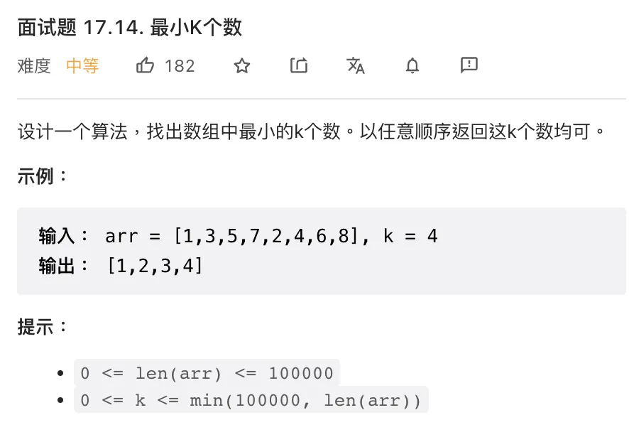

面试题 17.14. 最小K个数
Question

先自己想想看 🤔Try it yourself first 🤔
✍🏽 My Solution
Solution #1 [王爭-QuickSelect]
执行用时：3 ms, 在所有 Java 提交中击败了81.01%的用户
内存消耗：50.4 MB, 在所有 Java 提交中击败了16.73%的用户
class Solution {
private int[] result;
private int count = 0;
public int[] smallestK(int[] arr, int k) {
int n = arr.length;
if (n == 0) return arr;
if (k == 0) return new int[0];
result = new int[k];
quickSort(arr, 0, n-1, k);
return result;
}
private void quickSort(int[] arr, int left, int right, int k) {
if (left > right) return;
int pi = partition(arr, left, right);
int th = pi - left + 1; // 分區點在第幾個元素
if (th == k) { // 分區點左侧恰好 k 个，输出左侧元素
for (int i = left; i <= pi; i++) {
result[count++] = arr[i];
}
} else if (th < k) { // 基分區點左侧不足 k 个，递归处理右边，让基准点下标右移
for (int i = left; i <= pi; i++) {
result[count++] = arr[i];
}
quickSort(arr, pi+1, right, k-th);
} else { // 基准点左侧超过 k 个，递归处理左边，让基准点下标左移
quickSort(arr, left, pi-1, k);
}
}
private int partition(int[] arr, int left, int right) {
int i = left - 1;
for (int j = left; j < right; j++) {
if (arr[j] < arr[right]) {
swap(arr, i+1, j);
i++;
}
}
swap(arr, i+1, right);
return i+1;
}
private void swap(int[] arr, int i, int j) {
int tmp = arr[i];
arr[i] = arr[j];
arr[j] = tmp;
}
}
Explanation (in my words)
- How does their solution work?
-
多種解法時間複雜度比較
- 排序：用排序直接取前k個，time: O(n log n)
-
大頂堆：如果堆的元素不滿k個就不停往裡面插
如果比堆頂的元素小，就把堆頂刪除後插入 如果我比堆頂元素大，就不處理 ⇒ time: O(n logk) -
利用快速選擇O(n)，適合靜態數據，input的數據就不會再改動，動態就是會一直變
- 這次選擇快排
- What is the space/time complexity of their solution?
- time: O(n) n +n/2+n/4+n/8+n/2^k
- 1 + n/2+n/4+n/8+n/2^k = 2n-1 （等比公式求和）= O(n)
- space: O(log n) 遞歸調用棧的深度
-